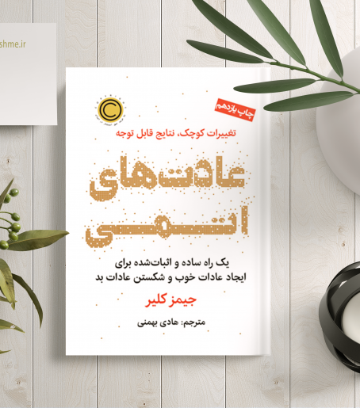

این کتاب راه هایی برای بهتر استفاده کردن از مغز را در اختیار شما قرار می دهد. به شما می آموزد که چطور برای تفکر و مغزتان محدودیت ایجاد نکرده و آن را به بهترین نحو ممکن مدیریت کنید.
کتاب باشگاه پنج صبحیها اثری از رابین شارما
این کتاب خواننده را به سحرخیزی و استفادهی درست از زمان راهنمایی میکند. ساعات ابتداییِ روز از باارزشترین زمانهای یک روز است که یک فرد میتواند با بهرهبرداری از
آن به سمت موفقیت پیش رود.
کتاب بهترین سال زندگی تو اثری از دارن هاردی
این کتاب شما را به عملگرایی و نوشتن اهداف به شفافترین شکل ممکن تشویق میکند.

کتاب عادتهای اتمی اثری از جیمز کلیر
در این کتاب به تاثییر عادتهای کوچک در زندگی پرداخته شده. به ما یاد می دهد که چگونه با شناخت عادتهای کوچک و مدیریت این عادتها، هر روز یک درصد بهتر شویم.
کتاب ذهن حواسجمع اثری از نیر ایال
این کتاب راهکارهایی برای تمرکز بیشتر و تعمق در تمامی امور زندگی را به خواننده معرفی میکند. داشتن ذهنی حواس جمع رویا نیست و تنها با انجام روشهای ساده و کاربردی میتوانید بر
روی هر کاری متمرکز باقی بمانید.
کتاب طرزفکر اثری از دکتر کارول دوک
این کتاب به شما کمک میکند تا خودتان را بهتر بشناسید و مهمترین چیز که طرز فکرتان است را به سوی طرز فکر رشد هدایت کند. اگر طرز فکر ما به درستی و در مسیر رشد تغییر کند، تاثیر آن بر
زندگی خانوادگی، کاری، ارتباطی و همه جوانب زندگی نمود پیدا میکند و باعث ترقی ما میشود.
کتاب شازده کوچولو اثری از آنتوان دوسنت اگزوپری
آنتوان دوسنت اگزوپری حقایقی را که به عقیدهٔ او فراموش شدهاند را بیان میکند او در این کتاب دوست داشتن، مهربانی و عشق را به سادهترین و در عین حال تأثیر گذارترین حالت
ممکن، به نحوی کنایه آمیز از زبان کودکی که از سیارهای دیگر آمده بیان میکند.
کتاب قدرت مثبتاندیشی اثری از نورمن وینسنت پیل
این کتاب به ما یاد می دهد چگونه در شرایط سخت آرامش خاطر داشته باشیم. این کتاب حاوی مفاهیمی الهام بخش برای رسیدن به زیبایی روحی و اعتماد به نفس در زندگی است.
کتاب آیین سخنرانی اثری از دیل کارنگی
این کتاب به ما میآموزد که چگونه با تمرین و پشتکار میتوانیم به توانایی صحبت در جمع دست پیدا کنیم. به باور نویسنده، آموزش و تمرین رموز موفقیت هستند و به انسان اعتماد به نفسی
ابدی میبخشند.
کتاب کار عمیق اثری ازکال نیوپورت
این کتاب یک اثر بینظیر برای تغییر نگرش، ارتقا مدل ذهنی و دگرگونی سبک زندگی شماست. کتابی که دیدگاه شما را دربارهی مدیریت زمان، برنامه ریزی، بهره وری، اولویت بندی و کار عمیق زیر و رو
خواهد کرد.
کتاب جهانهای موازی اثری از میچیو کاکو
این کتاب یکی از بهترین کتابهای علمی است که درباره جهانهای موازی نوشته شده.
رمان خداحافظ تسوگومی اثری از خانم یوشیموتو
این رمان داستان زندگی دختری به نام ماریا را نقل میکند که مدتی است از شهر کوچکش به توکیو نقل مکان کرده است. او خاطرات نوستالژیک خود را با دخترخالهاش، تسوگومی و اهالی دیگر
این شهر ساحلی روایت میکند.
 Sara Zarepour
Sara Zarepour